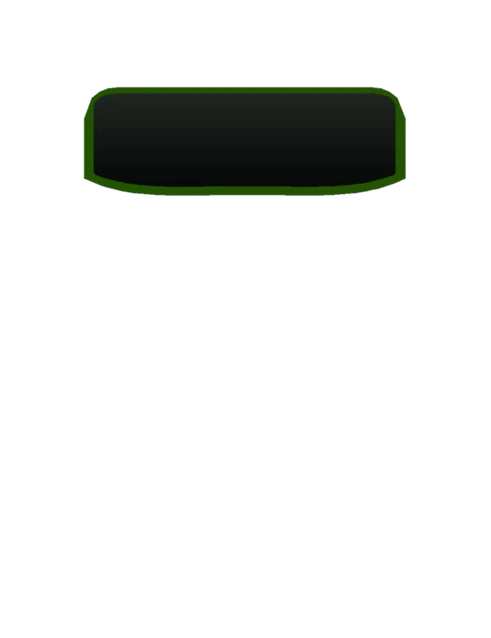
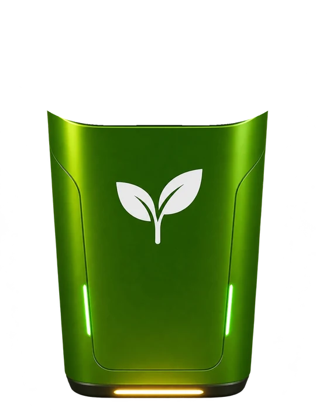
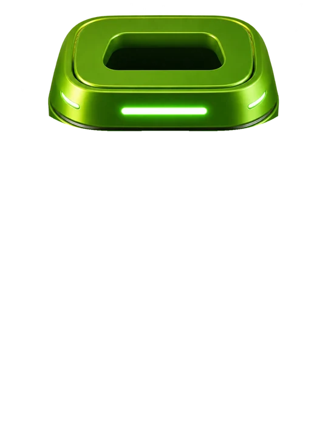
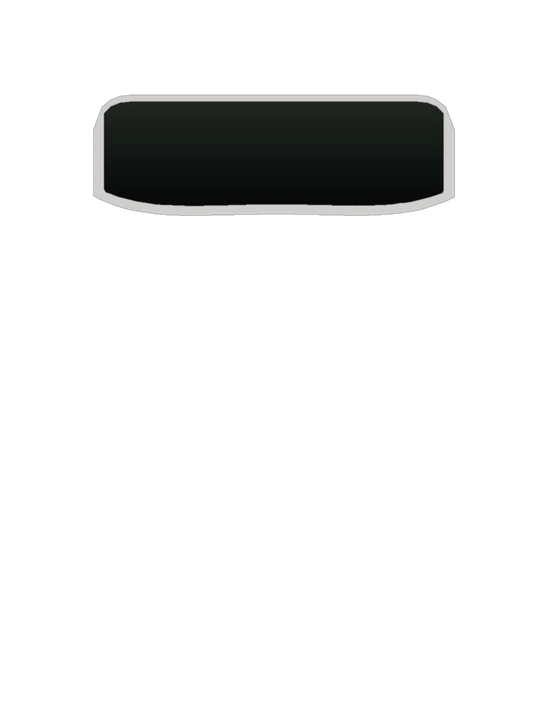
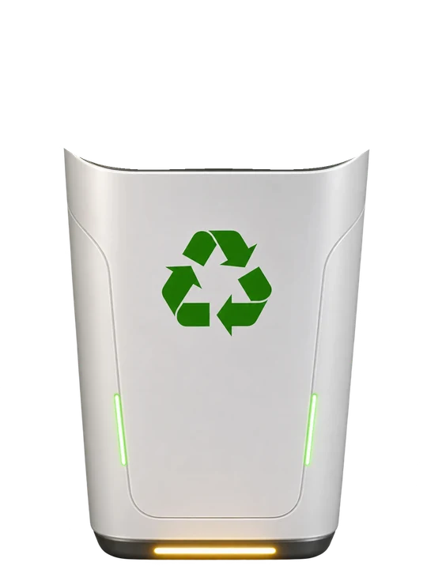
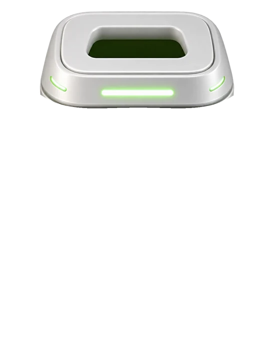

¿Qué residuo vas a desechar?
Escribe o dinos qué residuo quieres desechar.
Escuchando
Las tres canecas de la estación

Listo para escuchar
Hola, soy ECO. Dime qué vas a desechar y te muestro la caneca correcta.






